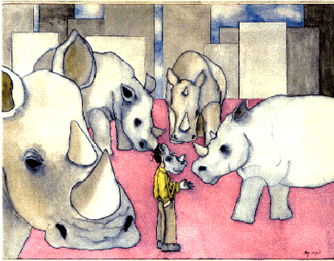

La pièce Rhinocéros, écrite par le dramaturge absurdiste Eugène Ionesco, reflète une vision qui tient l'univers pour définitivement insensé, irrationnel et absurde. Dans son essai "Notes et contre-notes", Ionesco écrit :"Je me vois déchiré par des forces aveugles, montant du plus profond de moi, s'opposant en un conflit désespérant, sans issue . . . je ne puis évidemment pas savoir qui je suis, ni pourquoi je suis." Ionesco écrit ses pièces pour faire état de ses conflits intérieurs avec ce qu'il voit comme un univers incompréhensible, et exprimer également ses difficultés à accepter sa propre existence. Il affirme, à propos de son oeuvre théâtrale: "Je tâche de projeter sur scène un drame intérieur. . . Je ne veux que traduire l'invraisemblable et l'insolite, mon univers." (Notes et contre-notes). Dans sa pièce Rhinocéros, Ionesco révèle ses craintes en la barbarie latente dans le coeur humain et, à travers le personnage de Bérenger, il se projette aussi lui-même avec ses propres conflits dans sa pièce. Pour représenter clairement ses thèses, Ionesco utilise nombre de techniques dramatiques originales. A travers celles-ci, Ionesco présente une peinture visuelle des conflits existentiels sous-jacents de la pièce. Les divers éléments dramatiques et thématiques de l'oeuvre se combinent pour former une image du monde intérieur chaotique et incohérent de Ionesco.
Une méthode par laquelle Ionesco communique ses thèmes est l'absurdité des personnages (en dehors de Bérenger) dans les premier et second actes. Ce ridicule apparaît particulièrement à travers leurs réactions face aux deux rhinocéros qui passent à toute allure devant le bistrot‚ au premier acte. Les gens disent, presque simultanément, "Oh, un rhinocéros!" puis "Ça alors !" Leurs commentaires sont tous très similaires, et ils semblent incapables de formuler des réflexions originales. Nous voyons déjà à ce point de la pièce quelque chose d'un "esprit de masse" à l'oeuvre, dans lequel chacun répète sans réfléchir les mots et les actes d'un autre. Au fil du dialogue il devient clair que personne ne voit dans les rhinocéros des présages d'une tendance à venir ou ne saisit la signification derrière leur apparence. Après avoir vu le premier rhinocéros, la Ménagère panique, déboule sur la scène et lâche son panier de provisions. La femme de l'Epicier voit le rhinocéros uniquement comme un instrument de vengeance contre la Ménagère qui n'achète pas chez eux. Le Vieux Monsieur affiche seulement un intérêt passager pour le rhinocéros. Il est surtout intéressé à gagner l'affection de la Ménagère en l'aidant à rassembler ses provisions éparpillées. (Tandis qu'elle finit de tout ramasser et s'apprête à partir, il propose de l'accompagner.) Après que le second rhinocéros a écrasé le chat de la Ménagère, celle-ci entame un deuil pitoyable qui se poursuit jusqu'à ce que le Logicien énonce le problème du rhinocéros à la fin du premier acte. Ces personnages périphériques, déterminés, sont incapables de comprendre la signification des rhinocéros, et c'est ce manque de réflexion qui assure leur transformation finale.
En plus de ridiculiser l'étroitesse de vue des personnages, Ionesco tourne en dérision ceux d'entre eux qui ont des prétentions à la sensibilité et à la logique. Leur raisonnement n'est rien qu'une farce, rendue dans certains cas plus ridicule encore par la croyance égotiste en leur propre supériorité intellectuelle. Ce groupe de personnages consiste principalement en Botard et le Logicien. Le Logicien est considéré comme la personne la plus sage et la plus raisonnable parmi les personnages du premier acte, et tous se tournent vers lui pour résoudre leur débat sur le rhinocéros. Ses réponses à leurs questions, en plus de sa précédente "démonstration" que Socrate était un chat, révèlent l'inanité de ses propositions logiques. Botard, bien qu'il ne soit pas autant estimé de ses collègues, s'enorgueillit de son "esprit méthodique ," et s'attache à une vision précise, scientifique de la vie. Il méprise les rumeurs sur les rhinocéros et les attribue à l'imagination des journalistes. Même après avoir vu un rhinocéros, Botard affirme : "Je ne vois rien du tout. C'est une illusion." . Lorsqu'il devient tout à fait clair que Botard avait tort, il nie avoir jamais douté de l'existence des rhinocéros. Il prétend avoir suivi le problème depuis le début, et il affirme en outre savoir qui est responsable. Il refuse d'admettre ses erreurs, et il se contredit en lançant des accusations totalement infondées, pour éviter d'avoir à le faire. A travers l'illogisme de Botard et du Logicien, Ionesco propose sa thèse que le raisonnement humain, en dépit de ses prétentions au contraire, est essentiellement absurde. Son monde intérieur est irrationnel et absurde, et Ionesco ne distingue aucun ensemble primordial de règles logiques liant l'univers en un tout compréhensible. D'après Ionesco, le raisonnement humain est incapable d'apporter de l'ordre au monde car il ne se ramène à rien de plus que des inepties.
Ainsi, Ionesco introduit ses thèmes par le biais de l'interaction entre tous les personnages, qui se révèlent complètement irrationnels. Un autre support dont Ionesco se sert pour véhiculer ses idées est le personnage de Bérenger. Les luttes de Bérenger avec la vie reflètent celles de Ionesco lui-même. Lui, bien plus que n'importe quel autre personnage, perçoit la réalité de la vie, et il boit pour fuir cette vision. Dans la première scène surtout, Bérenger semble déconnecté des évènements se produisant autour de lui. Il accorde peu d'attention au premier rhinocéros, et donne l'impression d'être généralement incohérent. Lorsqu'on le presse de se prononcer sur la provenance du rhinocéros, Bérenger lâche finalement: "Peut-être s'est-il abrité sous un caillou? . . . Peut-être a-t-il fait son nid sur une branche desséchée?". Bérenger se révèle en même temps détaché et désintéressé de la vie en général. il dit à son ami Jean que "la vie est un rêve", et il affirme plus loin : "Je me demande moi-même si j'existe!". De tels soucis existentialistes reflètent l'intérêt de Ionesco pour les problèmes physiques de sa propre existence.
Bérenger représente Ionesco également sur d'autres points. Comme Ionesco, il cherche un sens et une vérité définitifs à la vie. Bérenger admire ses amis, surtout Jean, et s'adresse à eux pour trouver ce qu'il cherche. Il ne peut les comprendre car ils sont insensés et ineptes, mais il présume qu'ils sont trop sages et bien avisés pour qu'il les comprenne. Il sait qu'il n'a pas trouvé de vérité ultime à la vie, mais il s'imagine que s'il pouvait devenir intelligent comme le Logicien ou cultivé comme Jean, il trouverait ce qu'il cherche. Son admiration envers ses amis fournit des indices sur la raison pour laquelle il est tellement scandalisé quand ils commencent à se transformer en rhinocéros. Il a confiance en eux, et il s'efforce de devenir comme eux. Quand ils deviennent rhinocéros, Bérenger est déçu et éprouve le sentiment d'une trahison personnelle. Il dit, après la mutation de Jean en rhinocéros, "Jamais je n'aurais cru ça de lui, jamais!". Bérenger ne peut comprendre la raison de la transformation de Jean, et il tente de la rationnaliser en affirmant que Jean a eu "un accès de folie". Bérenger est particulièrement affolé quand le Logicien se transforme parce qu'il pense que le Logicien aurait pu prouver à Dudard que les rhinocéros sont intrinsèquement mauvais et pas seulement un phénomène naturel. Le monde de Bérenger s'obscurcit d'un cauchemar envahissant tandis que ses amis succombent un à un aux rhinocéros. Sa foi en la raison, la culture et enfin l'amour est lentement mais inexorablement anéantie. Il se retrouve de la sorte seul, abandonné dans un univers hostile et incompréhensible.
En dehors des éléments de base de l'intrigue, Ionesco utilise beaucoup de techniques dramatiques non traditionelles pour mettre en scène l'absurdité de la vie. La plus évidente est l'emploi du rhinocéros en tant que métaphore de la barbarie essentielle des êtres humains, et aussi de l'absurdité de l'univers. A l'époque où cette pièce fut écrite, on n'aurait pas employé en dramaturgie une image aussi sauvage et brutale que le rhinocéros. Le rhinocéros contraste violemment avec les images de beauté et de noblesse qui caractérisaient les pièces des époques antérieures. Plusieurs objets matériels différents tombent ou sont détruits dans la pièce, ajoutant à l'effet visuel violent des rhinocéros. Par exemple, le chat de la Ménagère est écrasé, et Bérenger passe à travers le mur lorsqu'il fuit l'appartement de Jean. De même, le dialogue logique et ordonné est écarté dans la première scène, et les conversations intercalées contribuent à donner l'impression de chaos. Ionesco use de telles techniques pour donner l'expression sensorielle de son propre trouble intérieur.
Comme nous l'avons vu, les thèmes de Rhinocéros sont présentés à travers les techniques dramatiques et rhétoriques, l'absurdité des personnages secondaires, et les luttes existentielles du rôle principal, Bérenger. Inexorablement, les croyances et les espoirs de Bérenger pour se corriger sont battues en brèche, et finalement il ne lui reste rien d'autre à faire que crier son défi contre un monde hostile. Il est incapable de trouver un sens définitif à la vie car, d'après Ionesco, il n'y a aucun sens à lui trouver.